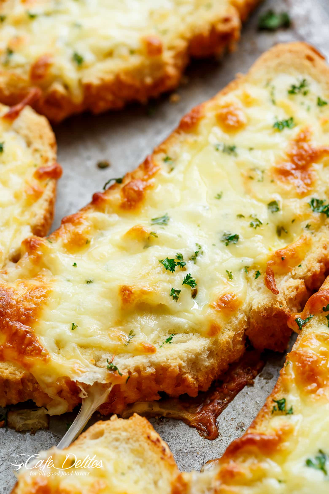

Garlic Cheese Toast

Description
Ingredients:
Bread
Butter
Garlic
Cheese
Steps:
Apply butter on one side of the bread.
Blend the butter ,garlic and cheese.
Spread mixture over the unbuttered sides of the toast and bake until bubbly and crisp!